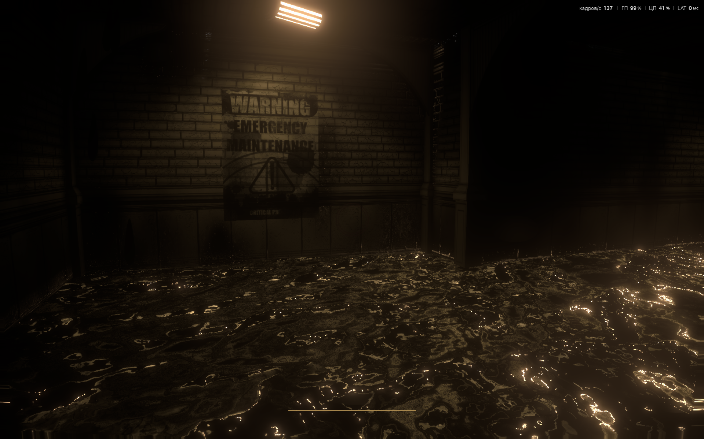
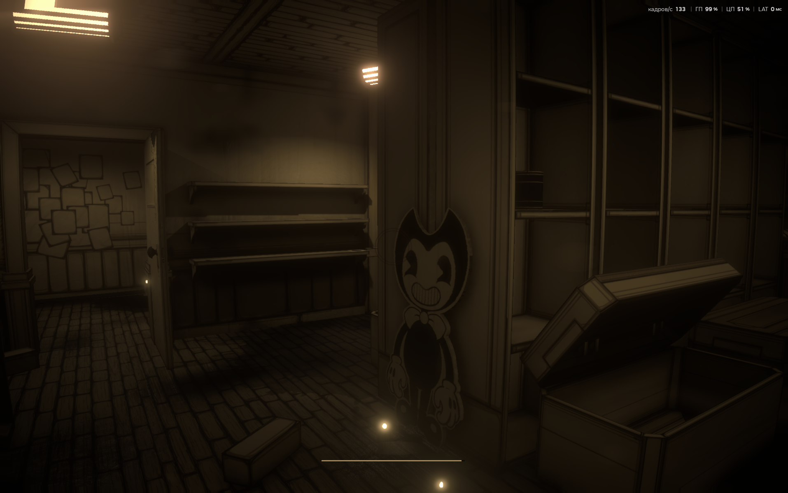

КРАТКАЯ СВОДКА
Down To The Inks - Качественная фан игра по вселенной Bendy, разворачивающая действия в настоящем времени. Главный герой, будучи исследователем, попадает в квартиру Джоуи Дрю, откуда более так просто не выберется
Как можно понять из названия игры суть игры будет чем то схожа с третьей главой BATIM игрок будет спускаться все ниже и ниже попутно разбираясь с чернильными затоплениями и пытаться найти способ выбраться из студии, при этом пытаясь не быть поглащенным различными чернильными противниками. Чем ниже игрок будет спускаться - тем страннее будут вещи происходящие на тех уровнях.

Геймплей завязан на исследовании различных заброшенных помещений, и взаимодействии с разнообразными механизмами, у игрока есть стамина из за чего бежать бесконечно не получится, также по пути вы будете противостоять потерянным - агрессивным чернильным гуманойдным существам, которые когда то были людьми, чтобы с ними расправиться - понадобится оружие, такое как GENT-Труба или аварийный топор.

СКРИНШОТЫ
Ниже представлены несколько скриншотов из игры, которые могут сформировать представление о стиле, и уровню графики.